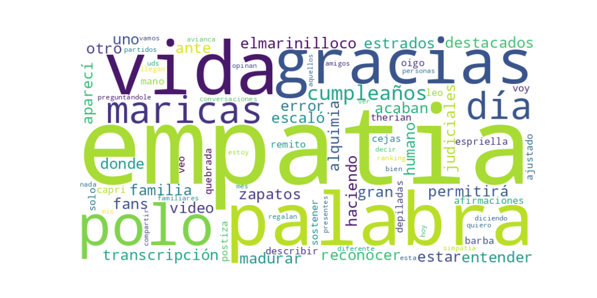

Seguidores: 945
Fecha de Análisis: 15 de octubre de 2023 Plataforma Analizada: Instagram Volumen de Texto: Corpus completo de publicaciones proporcionado.
El candidato emplea un estilo de comunicación predominantemente informal, personal y cercano, que se asemeja más a la interacción de una red social personal que a un discurso político estructurado. Su lenguaje es coloquial y popular, con uso de jerga, emojis, hashtags y menciones directas a otros usuarios (@). No existe un marco técnico o programático; en cambio, la comunicación se basa en reflexiones personales, anécdotas y reacciones inmediatas a eventos o interacciones. Este enfoque busca crear una sensación de autenticidad y conexión directa, sin filtros institucionales.
Los temas no se articulan como propuestas políticas convenc, sino como comentarios derivados de experiencias personales o reacciones: 1. Defensa Personal y Narrativa: Aborda acusaciones o controversias, justificando sus dichos como meras descripciones de la realidad. Ejemplo: Ante un video judicial, afirma: "solo me remito a describir lo que leo, oigo y veo", deslindándose de responsabilidad editorial. 2. Valores Personales (Empatía/Simpatía): Presenta conceptos como "empatía" y "simpatía" como metas de crecimiento personal, desvinculadas de una agenda política concreta. Ejemplo: Los define como "la palabra del 2026" que le permitirá "madurar más" y "ser un gran ser Humano". 3. Celebración de lo Cotidiano y Reconocimiento: Dedicación significativa a aspectos personales como cumpleaños, reconocimientos de seguidores y expectativas de regalos. Ejemplo: "Hoy día de mi Cumpleaños!!!! Día de cumpleaños, vamos a ver qué me regalan en Avianca".
El tono general es autoreferencial, defensivo y casual. Prevalece un sentimiento de justificación personal frente a críticas, mezclado con momentos de celebración autofelicitante. No se detecta un tono propositivo, optimista sobre el futuro colectivo o confrontacional con actores políticos específicos de forma programática. La crítica existe, pero se presenta como una observación pasiva ("yo no estoy diciendo nada diferente").
Las palabras clave no conforman un eslogan político tradicional, sino un glosario personalista y defensivo: * "Empatía" / "Simpatía": Usadas como conceptos de desarrollo personal abstracto. * "Solo me remito a describir": Frase clave para la estrategia de defensa, posicionándolo como un mero transmisor neutral. * "Leer, oír y ver": Refuerza la narrativa de que sus comentarios son solo reflejos de lo evidente. * "Gracias a todos los que son mi familia": Busca crear una comunidad cerrada (familia) de seguidores leales.
La estrategia de comunicación general del candidato prioriza la construcción de una identidad personal por encima de un proyecto político. Parece dirigirse a una audiencia que valora la percepción de autenticidad sin pulir y la cercanía emocional con la figura pública, posiblemente desencantada con el discurso político formal. Su discurso busca evocar identificación y lealtad personal ("familia"), utilizando la exposición de su vida cotidiana y sus reacciones viscerales como principal herramienta de conexión. La estrategia puede interpretarse como un intento de normalizar y personalizar la figura del candidato, desdibujando la línea entre la persona privada y el aspirante a un cargo público, y apelando a un vínculo basado en la afinidad emocional más que en argumentos programáticos.
1. Resumen del Patrón de Éxito: El éxito de estos videos no se basa en propuestas programáticas o confrontación política, sino en una conexión emocional directa y auténtica, construida a partir de la cercanía y la humanización. El candidato se presenta ante todo como una persona, no como una figura política. El patrón es el de un "amigo exitoso y agradecido" que comparte momentos íntimos de celebración personal (cumpleaños), logros profesionales (viajes, primera clase) y reflexiones positivas sobre valores como la simpatía y la empatía. La fórmula es la viralización del acceso privilegiado a la vida privada de una figura pública, generando identificación y aspirational appeal.
2. Tácticas de Comunicación Clave: * Humanización y Desmitificación: Desplaza el foco de lo político a lo personal. Habla de su cumpleaños, agradece a amigos y familiares, y muestra detalles cotidianos (como esperar un regalo en una aerolínea). Esto desarma la percepción de distanciamiento típica de la política. * Aspirational Content y Exhibición de Estatus Moderada: El contenido genera identificación a través de un estilo de vida deseable pero aparentemente alcanzable ("ver qué me regalan en Avianca" implica un contexto de primera clase o viajes frecuentes). No es ostentación cruda, sino una normalización de un estatus de éxito, conectando con las aspiraciones socioeconómicas de su audiencia. * Emocionalidad Positiva y Gratitud: El tono predominante es cálido, agradecido y optimista. Se centra en valores universales positivos (empatía, simpatía) y en celebrar la vida y las relaciones personales. Esto crea una "burbuja afectiva" alejada del conflicto político tradicional. * Contenido Enigmático y de "Backstage": La mención a "#Matamoros #Giraldo" seguida de "Error en la transcripción" funciona como un señuelo. Sugiere acceso a un contexto no público (quizás interno, de equipo) o a una anécdota no revelada, generando misterio y la sensación de ser parte de un círculo más cercano.
3. Temas de Mayor Resonancia: Los temas que generan interacción no son políticos en el sentido estricto, sino temas personales y de estilo de vida: 1. Celebraciones personales: Su cumpleaños como evento compartido. 2. Logros y recompensas materiales implícitas: Viajes, atención de marcas como Avianca. 3. Valores emocionales universales: Empatía, simpatía, gratitud. 4. Claves internas o "easter eggs": Las etiquetas crípticas (#Matamoros) que activan a la base más comprometida.
4. Perfil de la Audiencia Implícita: El lenguaje y los temas apuntan a una audiencia dual: * Base Leal Consolidada: Que responde a las claves internas (hashtags) y consume el contenido como un refuerzo de la personalidad del líder, más que de su programa. * Público Joven o Apolítico en Redes: Atraído por la estética de éxito personal, el tono positivo y la ruptura con el formato político tradicional. Es contenido "digestible" para algoritmos y usuarios que buscan entretenimiento o inspiración light, no debate denso.
5. Conclusión Estratégica: La clave fundamental de su poder discursivo es la despolitización performativa. Su discurso más exitoso no compite en el terreno de las ideas políticas, sino que lo evade para competir (y ganar) en el terreno del afecto, la identificación personal y la economía de la atención de las redes sociales. Lo que lo hace potente y diferente es que no parece estar "haciendo campaña" en el sentido tradicional; está "viviendo y compartiendo" su éxito, y es esa narrativa de vida la que hace proselitismo político por asociación. Su mayor fuerza es que su comunicación de alto engagement no depende de ataques o promesas complejas, sino de la construcción de una relación parasocial atractiva y positiva con el electorado. El riesgo estratégico es la posible desconexión con electores que priorizan sustancia programática sobre carisma digital.

Caption: #Matamoros #Giraldo
Likes: 24 | Comentarios: 7 | Reproducciones: 1,324
Ver en InstagramCaption: LA SIMPATIA... LA EMPATIA.... La Palabra de este mes, que quiero compartir con todos mis amigos, familiares y personas que están presentes en mi Vida y aquellos que llegan! Hoy día de mi Cumpleaños!!!!
Likes: 8 | Comentarios: 2 | Reproducciones: 675
Ver en Instagram